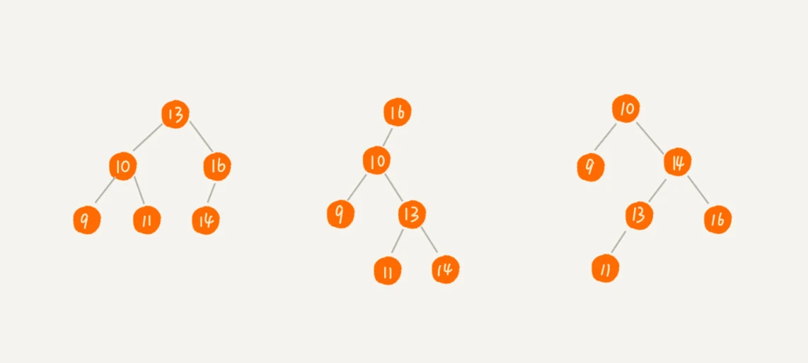
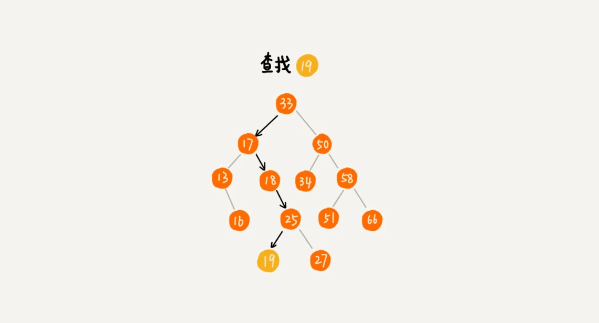
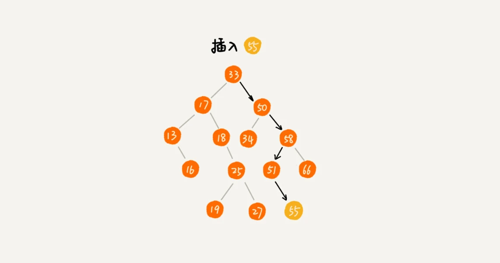
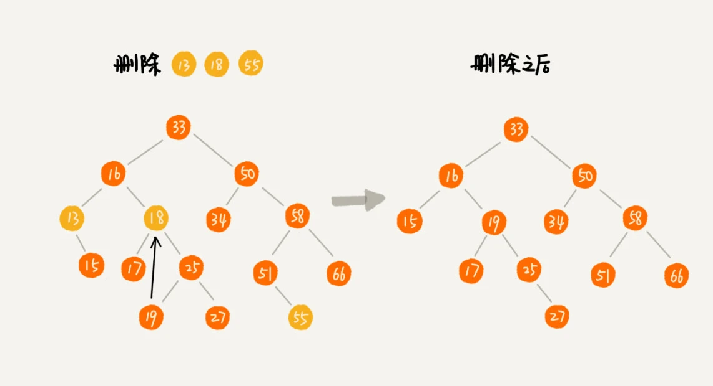
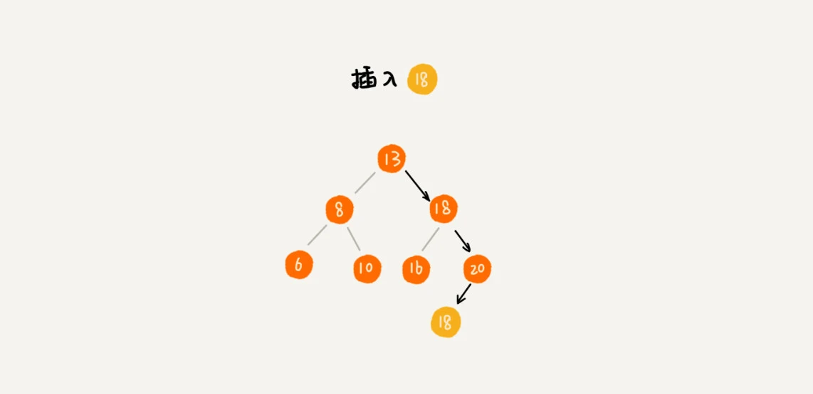
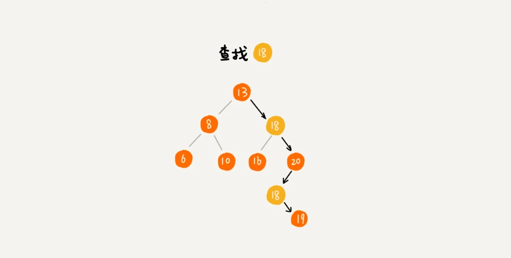
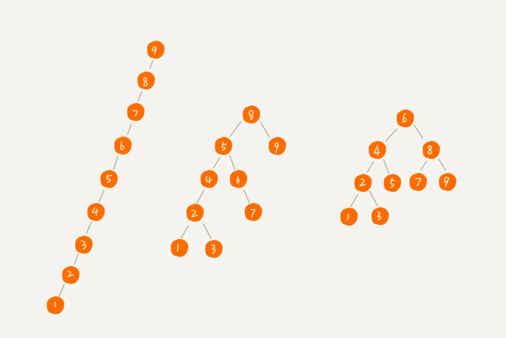

二叉查找树（Binary Search Tree）
二叉查找树最大的特点，支持动态数据集合的快速插入、删除、查找操作。
散列表也是支持这些操作的，并且散列表的这些操作比二叉查找树更高效，时间复杂度是 O(1)。
既然有了这么高效的散列表，使用二叉树的地方是不是都可以替换成散列表呢？有没有哪些地方是散列表做不了，必须要用二叉树来做的呢？
定义
二叉查找树是二叉树中最常用的一种类型，也叫二叉搜索树。顾名思义，二叉查找树是为了实现快速查找而生的。不过，它不仅仅支持快速查找一个数据，还支持快速插入、删除一个数据。
原理：
这些都依赖于二叉查找树的特殊结构。
二叉查找树要求，在树中的任意一个节点，其左子树中的每个节点的值，都要小于这个节点的值，而右子树节点的值都大于这个节点的值。

1. 二叉查找树的查找操作
先取根节点，如果它等于要查找的数据，那就返回。如果要查找的数据比根节点的值小，那就在左子树中递归查找；如果要查找的数据比根节点的值大，那就在右子树中递归查找。

public class BinarySearchTree {
private Node tree;
public Node find(int data) {
Node p = tree;
while (p !== null) {
if (data < p.data) p = p.left;
else if (data > p.data) p = p.right
else return p
}
return null
}
public static class Node {
private int data;
private Node left;
private Node right;
public Node(int data) {
this.data = data;
}
}
}2. 二叉查找树的插入操作
二叉查找树的插入过程有点类似查找操作。新插入的数据一般都是在叶子节点上，所以只需要从根节点开始，依次比较要插入的数据和节点的大小关系。
如果要插入的数据比节点的数据大，并且节点的右子树为空，就将新数据直接插到右子节点的位置；如果不为空，就再递归遍历右子树，查找插入位置。同理，如果要插入的数据比节点数值小，并且节点的左子树为空，就将新数据插入到左子节点的位置；如果不为空，就再递归遍历左子树，查找插入位置。

public void insert(int data) {
if (tree == null) {
tree = new Node(data);
return;
}
Node p = tree;
while (p != null) {
if (data > p.data) {
if (p.right == null) {
p.right = new Node(data);
return;
}
p = p.right;
} else { // data < p.data
if (p.left == null) {
p.left = new Node(data);
return;
}
p = p.left
}
}
}3. 二叉查找树的删除操作
针对要删除节点的子节点个数的不同，需要分三种情况来处理。
第一种情况是，如果要删除的节点没有子节点，只需要直接将父节点中，指向要删除节点的指针置为 null。
第二种情况是，如果要删除的节点只有一个子节点（只有左子节点或者右子节点），只需要更新父节点中，指向要删除节点的指针，让它指向要删除节点的子节点就可以了。
第三种情况是，如果要删除的节点有两个子节点，需要找到这个节点的右子树中的最小节点，把它替换到要删除的节点上。然后再删除掉这个最小节点，因为最小节点肯定没有左子节点（如果有左子结点，那就不是最小节点了），所以，可以应用上面两条规则来删除这个最小节点。如下图中的删除节点 18。

public void delete(int data) {
Node p = tree; // p 指向要删除的节点，初始化指向根节点
Node pp = null; // pp 记录的是p的父节点
while (p != null && p.data != data) {
pp = p;
if (data > p.data) p = p.right;
else p = p.left;
}
if (p == null) return; // 没有找到
// 要删除的节点有两个子节点
if (p.left != null && p.right != null) { // 查找右子树中最小节点
Node minP = p.right;
Node minPP = p; // minPP表示minP的父节点
while (minP.left != null) {
minPP = minP;
minp = minP.left;
}
p.data = minP.data; // 将minP 的数据替换到P中
p = minP; // 下面就变成删除minP了
pp = minPP;
}
// 删除节点是叶子节点或者仅有一个子节点
Node child; // p 的子节点
if (p.left != null) child = p.left;
else if (p.right != null) child = p.right;
else child = null;
if (pp == null) tree = child; // 删除的是根节点
else if (pp.left == p) pp.left = child;
else pp.right = child;
}实际上，关于二叉查找树的删除操作，还有个非常简单、取巧的方法，就是单纯将要删除的节点标记为“已删除”，但是并不真正从树中将这个节点去掉。这样原本删除的节点还需要存储在内存中，比较浪费内存空间，但是删除操作就变得简单了很多。而且，这种处理方法也并没有增加插入、查找操作代码实现的难度。
4. 二叉查找树的其他操作
二叉查找树中支持快速地查找最大节点和最小节点、前驱节点和后继节点。
中序遍历二叉查找树，可以输出有序的数据序列，时间复杂度是 O(n)，非常高效。因此，二叉查找树也叫作二叉排序树。
支持重复数据的二叉查找树
在实际的软件开发中，在二叉查找树中存储的，是一个包含很多字段的对象。利用对象的某个字段作为键值（key）来构建二叉查找树。把对象中的其他字段叫作卫星数据。
前面讲的二叉查找树的操作，针对的都是不存在键值相同的情况。那如果存储的两个对象键值相同，这种情况该怎么处理呢？
第一种方法，二叉查找树中每一个节点不仅只存储一个数据，因此通过链表和支持动态扩容的数组等数据结构，把值相同的数据都存储在同一个节点上。
第二种方法：
每个节点仍然只存储一个数据。在查找插入位置的过程中，如果碰到一个节点的值，与要插入数据的值相同，就将这个要插入的数据放到这个节点的右子树，也就是说，把这个新插入的数据当作大于这个节点的值来处理。

当要查找数据的时候，遇到值相同的节点，并不停止查找操作，而是继续在右子树中查找，直到遇到叶子节点，才停止。这样就可以把键值等于要查找值的所有节点都找出来。

对于删除操作，也需要先查找到每个要删除的节点，然后再按前面讲的删除操作的方法，依次删除。
二叉查找树的时间复杂度分析

实际上，二叉查找树的形态各式各样。比如这个图中，对于同一组数据，构造了三种二叉查找树。它们的查找、插入、删除操作的执行效率都是不一样的。图中第一种二叉查找树，根节点的左右子树极度不平衡，已经退化成了链表，所以查找的时间复杂度就变成了 **O(n)**。
最理想的情况下，二叉查找树是一棵完全二叉树（或满二叉树）。从前面的例子、图，以及还有代码来看，不管操作是插入、删除还是查找，**时间复杂度其实都跟树的高度成正比，也就是 O(height)**。既然这样，现在问题就转变成另外一个了，也就是，如何求一棵包含 n 个节点的完全二叉树的高度？
树的高度就等于最大层数减一，为了方便计算，转换成层来表示。从图中可以看出，包含 n 个节点的完全二叉树中，第一层包含 1 个节点，第二层包含 2 个节点，第三层包含 4 个节点，依次类推，下面一层节点个数是上一层的 2 倍，第 K 层包含的节点个数就是 2^(K-1)。
不过，对于完全二叉树来说，最后一层的节点个数有点儿不遵守上面的规律了。它包含的节点个数在 1 个到 2^(L-1) 个之间（假设最大层数是 L）。如果把每一层的节点个数加起来就是总的节点个数 n。也就是说，如果节点的个数是 n，那么 n 满足这样一个关系：
n >= 1+2+4+8+...+2^(L-2)+1
n <= 1+2+4+8+...+2^(L-2)+2^(L-1)借助等比数列的求和公式，可以计算出，L 的范围是[log2(n+1), log2n +1]。完全二叉树的层数小于等于 log2n +1，也就是说，完全二叉树的高度小于等于 log2n。
不管怎么删除、插入数据，在任何时候，都能保持任意节点左右子树都比较平衡的二叉查找树 – 平衡二叉查找树。平衡二叉查找树的高度接近 logn，所以插入、删除、查找操作的时间复杂度也比较稳定，是 O(logn)。
思考
散列表的插入、删除、查找操作的时间复杂度可以做到常量级的 O(1)，非常高效。而二叉查找树在比较平衡的情况下，插入、删除、查找操作时间复杂度才是 O(logn)，相对散列表，好像并没有什么优势，那为什么还要用二叉查找树呢？
第一，散列表中的数据是无序存储的，如果要输出有序的数据，需要先进行排序。而对于二叉查找树来说，我们只需要中序遍历，就可以在 O(n) 的时间复杂度内，输出有序的数据序列。
第二，散列表扩容耗时很多，而且当遇到散列冲突时，性能不稳定，尽管二叉查找树的性能不稳定，但是在工程中，我们最常用的平衡二叉查找树的性能非常稳定，时间复杂度稳定在 O(logn)。
第三，笼统地来说，尽管散列表的查找等操作的时间复杂度是常量级的，但因为哈希冲突的存在，这个常量不一定比 logn 小，所以实际的查找速度可能不一定比 O(logn) 快。加上哈希函数的耗时，也不一定就比平衡二叉查找树的效率高。
第四，散列表的构造比二叉查找树要复杂，需要考虑的东西很多。比如散列函数的设计、冲突解决办法、扩容、缩容等。平衡二叉查找树只需要考虑平衡性这一个问题，而且这个问题的解决方案比较成熟、固定。
最后，为了避免过多的散列冲突，散列表装载因子不能太大，特别是基于开放寻址法解决冲突的散列表，不然会浪费一定的存储空间。